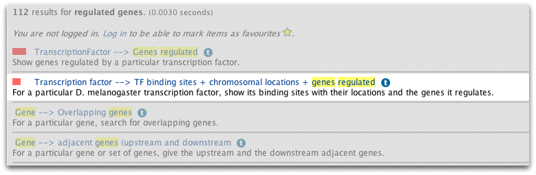
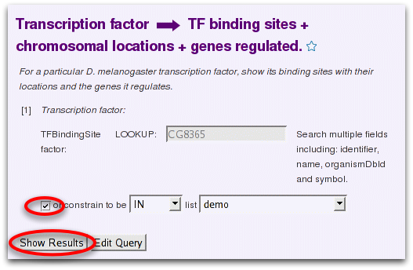
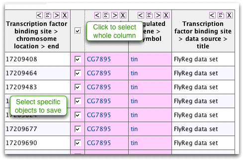
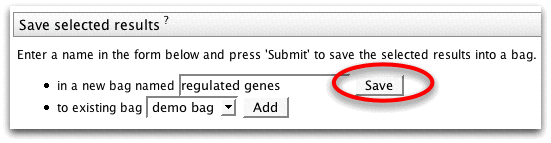

close

|
|
| previous | next |
| Bag details page | MyMine |
You can use bags in any template query or queries you create yourelf in the QueryBuilder. As the bag details page suggested many of the genes in our bag were transcription factors we can run a template to find the genes they regulate. FlyMine includes FlyReg - a curated DNAse 1 binding site data set.
Search the template queries for 'regulated genes'.
![[Click Search Templates]](click_search_templates.png)
Select the template 'Transcription factor --> TF binding sites + chromosomal locations + genes regulated'
Now that we have created a bag the template query gives us the option to use it instead of entering and identifier.
Click the checkbox to select our demo bag and run the query.
The results table shows any genes from our original bag that, according to FlyReg, regulate a particular gene.>/p>
You can also create new bags from results tables. We can save a bag of the regulated genes from this query to look at the bag etails page or use it in more templates.
Click on the checkbox by 'Regulated gene > identifier' and choose a name for the saved bag.

Using bags is an excellent way to retrieve information about a whole list of data. For example we could also retrieve:
- all the orthologues in another organsim, e.g. D. pseuedoobscura
- gene expression results from FlyAtlas
- protein-protein interactions for these genes
- and P-element insertions that overlap these genes